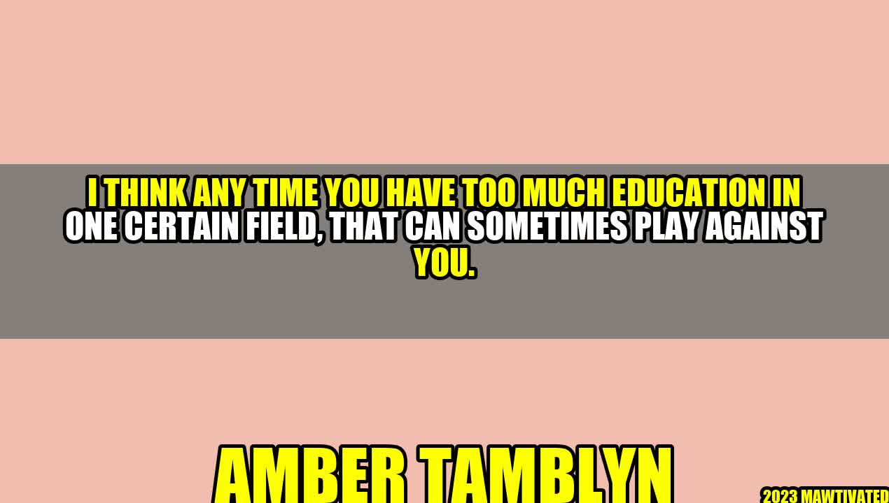

The Downside of Having Too Much Education in a Certain Field

Amber Tamblyn is an American actress and writer who rose to fame after her role in the movie "Sisterhood of the Traveling Pants". She grew up in a family of artists, writers, and academics. Her father was a actor and her mother was a singer and artist. Both of her parents pushed her to pursue education, and she eventually went on to attend a college in Rhode Island. In 2018, Tamblyn gave a speech at the Women's March, where she talked about the dangers of having too much education in one certain field.
The Dangers of Over-Specialization
Tamblyn's speech highlighted a sentiment that has been growing in recent years: that, sometimes, too much education in one certain field can actually work against you. This is especially true in fields that require creativity and flexibility, where having too much specialized knowledge can lead to a lack of outside-the-box thinking and a resistance to change.
In fact, many of the most innovative and successful individuals in history have been those who brought a wide range of experiences and knowledge to their work. They were not bound by a single field or way of thinking and were able to synthesize ideas from a variety of sources.
The Downside of Specialization
However, there are some very real downsides to over-specialization. Some of these include:
- Lack of Perspective: Specializing too much in one subject can lead to a lack of perspective on other issues and subjects beyond your area of expertise. This can have a limiting effect on your ability to think about problems and issues in new and creative ways.
- Less Flexible Thinking: Specialization can cause people to think about problems in a narrow, linear way, refusing to consider alternative solutions that might exist outside of their field of expertise.
- Difficulty Adapting to Change: In fields where change is constant, over-specialization can cause people to be resistant to new ideas and technologies, which can limit their ability to succeed in a rapidly-changing environment.
Examples of Over-Specialization
There are many fields where over-specialization can be a hindrance to creativity and innovation. These include:
- Law: Lawyers who specialize in a single area of law can have an overly narrow perspective on legal issues and may find it difficult to consider alternative legal theories or arguments.
- Medicine: Doctors who specialize in a single area of medicine may be less adept at treating patients with multiple or complex medical issues, and may not be as open to new treatments or diagnoses that fall outside of their area of expertise.
- Science: Scientists who specialize in a single area of study may miss out on important discoveries or insights that come from multi-disciplinary collaboration.
Three Takeaways to Avoid Over-Specialization
There are steps you can take to avoid over-specialization in your field. Here are three areas to focus on:
- Be Curious: Make an effort to learn about areas of study, industries or disciplines outside of your field.
- Be Open To Learning: Embrace new technologies and approaches, even if they seem outside of your comfort zone or area of expertise.
- Collaborate: Connect and collaborate with people who bring different perspectives and skills to your work. Working with others who have a variety of backgrounds and viewpoints can spark new ways of thinking, and lead to novel solutions to complex problems.
Conclusion
It's important to recognize the dangers of over-specialization, and take steps to avoid falling into that trap. By being curious, open to learning new things, and willing to collaborate with others, you can cultivate a perspective that's both wide-ranging and well-informed, enabling you to be more innovative and flexible in your work.
Hashtags
#over-specialization #innovation #collaboration #limitations #openness #curiosity
SEO Keywords
over-specialization, innovation, collaboration, limitations, openness, curiosity
Article Category
Career Guidance
Curated by Team Akash.Mittal.Blog
Curated by Team Akash.Mittal.Blog
Share on Twitter Share on LinkedIn